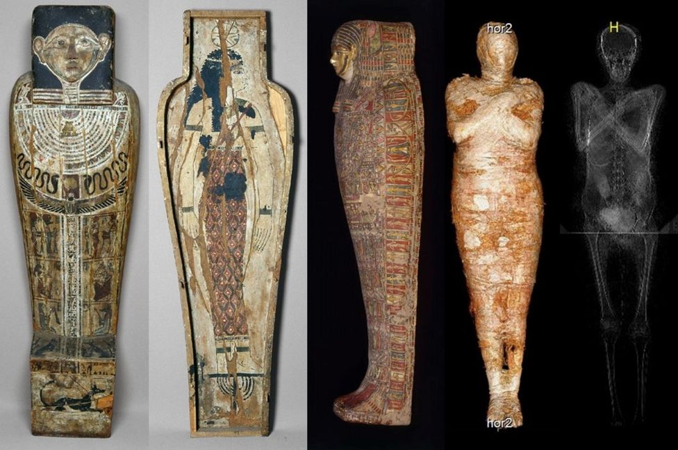

A1 the fossil is unknown. The creature lived years ago. The whale sported features. mummy
a waxed body over centuries 
A2 the fossil of a whale, is unknown species. The creature lived 43 million years ago. The prehistoric whale, lived on land and sea, sported features of an accomplished hunter
B1 The fossil of a four-legged, unearthed more than 10 years ago, is unknown species. The creature, an ancestor of the modern-day whale, lived 43 million years ago. The prehistoric whale, known as semi-aquatic, because it lived on land and sea, sported features of an hunter, making it stand out (pp)
B2 Egyptian scientists say that the fossil of a four-legged prehistoric whale, unearthed more than 10 years ago in the country’s Western Desert is unknown species. The creature, an ancestor of the modern-day whale, lived 43 million years ago. The prehistoric whale, known as semi-aquatic, because it lived on land and sea, sported features of an accomplished hunter, making it stand out (pp)
C1 Egyptian scientists say that the fossil of a four-legged prehistoric whale, unearthed more than 10 years ago in the country’s Western Desert is unknown species. The creature, an ancestor of the modern-day whale, lived 43 million years ago. The prehistoric whale, known as semi-aquatic, because it lived on land and sea, sported features of an accomplished hunter, making it stand out among other whale fossils.
C2 Egyptian scientists say the fossil of a four-legged prehistoric whale, unearthed more than 10 years ago in the country’s Western Desert, is that of a previously unknown species. The creature, an ancestor of the modern-day whale, is believed to have lived 43 million years ago. The prehistoric whale, known as semi-aquatic because it lived on land and sea, sported features of an accomplished hunter, making it stand out among other whale fossils, the team’s leading paleontologist Hesham Sallam told the Associated Press news agency on Tuesday.